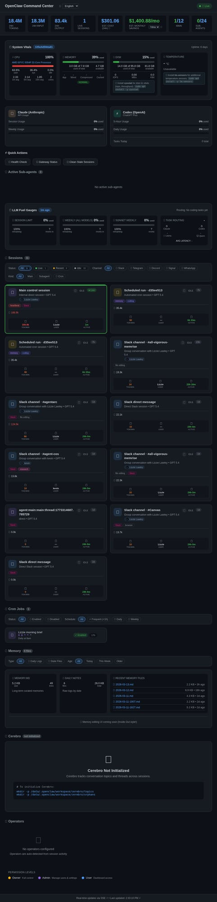
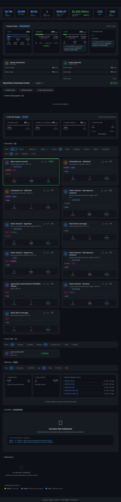

Memrise × OpenClaw Implementation Documentation
This document argues that Memrise should use OpenClaw as a tightly scoped internal AI operating layer, starting with one serious technical workflow rather than a broad multi-agent rollout. The first goal is to prove operational leverage safely, not to maximize visible autonomy.
Contents
What problem this is actually solving
The real constraint is not access to powerful models. The real constraint is operating leverage.
Symptoms of the current state
- Too many demands on a small team
- Too much friction between idea, spec, implementation, and review
- AI experiments remain fragmented and inconsistent
- Too much dependence on scarce technical bandwidth
What the implementation should achieve
- Reduce execution friction
- Create visible trust boundaries
- Increase throughput without increasing chaos
- Provide a reusable operating model for future workflows
What I would recommend Memrise do — and not do
Recommended
- Start with one high-value, bounded workflow
- Use OpenClaw as the orchestration layer, not the whole product
- Make BMO the first serious agent because its outputs are inspectable and reviewable
- Keep Slack as the coordination surface and GitHub as the execution/review surface
- Invest early in observability, logs, approvals, and reset paths
Not recommended yet
- Sprawling multi-agent architecture from day one
- Broad autonomous access across business systems
- Premature support/marketing automation before technical execution is trusted
- Using the most expensive models as the default for every step
- Treating “assistant behavior” as success instead of measurable throughput
This recommendation is based on a simple prioritization principle: the first implementation should maximize learning and leverage while minimizing operational ambiguity and blast radius.
Recommended architecture
The strongest pattern from the research is consistent: serious implementations do not rely on one giant autonomous agent. They use an orchestration layer, bounded specialist roles, explicit integrations, approval boundaries, and observability.
Why Pep still matters even in a “one workflow first” model
The recommendation is to start with one serious workflow, not one isolated agent. In practice, Pep remains important because Memrise will often need a translation layer between business intent and technical execution.
Pep’s role
- translate non-technical requests into bounded work
- collapse ambiguity before it reaches BMO
- coordinate across Slack, docs, tasks, and agent workflows
- surface tradeoffs, priorities, blockers, and next steps
- act as the operator-facing layer rather than raw execution engine
How Pep works with BMO
- Pep frames the problem
- BMO executes the technical work
- Pep translates technical output back into business-relevant terms
- Pep is also the better place for workflows involving planning, Asana, bets, and cross-thread synthesis
Why BMO should be the first serious implementation
BMO is the right first workflow because coding execution is more concrete and measurable than many broader internal AI use cases. It has clearer inputs, clearer outputs, and a natural human review boundary via GitHub.
Why it is strong as phase 1
- Tasks can be bounded
- Artifacts are visible: files, diffs, tests, PRs
- Quality can be evaluated concretely
- Review and approval already have a natural home
What BMO requires
- Dedicated email
- Dedicated GitHub account
- Slack identity or presence
- Repo access
- Bounded permissions
- Evidence-bound reporting contract
Practical example: building PodChats with a non-developer requester
This is the kind of section that makes the architecture real rather than conceptual. Imagine Memrise wants to build or evolve a product like PodChats, and the requester is not deeply technical.
Business-side request
“We want PodChats to do X. Here’s what we’re trying to achieve. Here are the user outcomes we care about.”
Technical challenge
The requester may not know the repo, system constraints, architecture boundaries, or implementation sequence needed to turn the idea into work.
How it should work
- The non-technical stakeholder states the outcome they want.
- Pep turns that into a bounded problem statement, surfaces ambiguities, and identifies likely systems touched.
- BMO inspects the codebase and produces a feasible technical plan or directly implements a safe bounded slice.
- Artifacts come back in a human-reviewable form.
- If the request is under-specified or risky, the system stops and asks for clarification rather than inventing certainty.
Worked example: PodChats feature request
Business request
“For PodChats, we want users to be able to continue a conversation after finishing an episode, and we want to test whether that increases retention.”
What Pep should extract
- What exactly counts as “continue a conversation”?
- What surfaces are affected: mobile UI, backend, content pipeline, analytics?
- What is the smallest shippable slice?
- What metric matters: session length, repeat use, lesson completion?
What BMO should do next
- inspect the PodChats repo or relevant services
- identify touchpoints: conversation state, transcript access, UI entry points, analytics hooks
- propose a bounded implementation plan
- implement the first safe slice: e.g. “resume conversation” button + stored thread state
What comes back to humans
- files changed
- summary of architectural impact
- tests run
- known risks or unresolved questions
- what would be needed for phase 2
This is the practical pattern Memrise needs: non-technical intent gets translated into a technically bounded change set, rather than being dumped raw onto a coding agent.
How a non-developer should use this system
One of the important design questions is whether the system can be useful to somebody who does not understand the repo, environment, or implementation details. The answer is yes, but only if the workflow is designed properly.
What non-developers provide
- desired business outcome
- constraints and urgency
- examples / references
- acceptance criteria at a product level
What Pep does
- turn goal into bounded technical work
- surface ambiguities
- decide whether BMO can act or needs clarification
- translate output back into understandable language
What BMO does
- inspect code and systems
- implement or propose exact technical changes
- run checks
- return evidence, not abstraction
This is important because a lot of companies make the mistake of assuming that a coding agent should talk directly to non-technical stakeholders as if both sides speak the same language. In practice, the translation/orchestration layer matters.
Future agent directions after BMO is proven
Data agent
Potentially valuable for analytics, reporting, experiment reads, and insight generation — but only with very strong data-access boundaries, query scoping, and auditability.
Pep-driven operations
Planning and operating workflows through Pep makes sense for task systems, Asana-style coordination, bets, prioritization, and cross-functional synthesis.
What should wait
Any agent with broad data access, customer-facing autonomy, or rights to modify important business systems should come later, after BMO and core trust patterns are proven.
Security concerns and real-world implications
The research repeatedly points to the same thing: agentic systems alter the threat model. They consume untrusted input, reason dynamically, and cross boundaries between systems.
Main risks
- Prompt injection from web pages, docs, tickets, or repo content
- Over-permissioned agents with too much tool access
- Secrets exposure through environment or broad runtime access
- Unsafe writes or merges without review
- Opaque actions without audit trails
- Identity confusion between human and agent accounts
What the research suggests
- Do not trust agents with secrets by default
- Give each agent its own identity
- Use least privilege and narrow scopes
- Require approval for consequential actions
- Make logs and decision traces queryable
- Use external validation, not model self-validation
Security posture recommended for Memrise
Operational security checklist
Identity controls
- one identity per agent
- no shared long-lived credentials where avoidable
- separate human and agent accounts clearly
- use org membership and repo permissions intentionally
Runtime controls
- limit tools by workflow and channel where possible
- keep dangerous actions behind explicit review
- prefer bounded runtimes and scoped repos
- treat browser relay and live sessions as privileged access
Data controls
- avoid dumping sensitive context into prompts unnecessarily
- move durable facts into docs/issues rather than chat transcripts
- use retrieval selectively instead of broad context stuffing
- mask or avoid secrets in logs and status updates
Human controls
- review before merge
- review before external send
- review before permission expansion
- reset sessions that show drift instead of trusting momentum
Cost model and mitigation tactics
A serious implementation document has to deal with cost, because agent systems can become expensive quickly — especially if the workflow is vague, context windows are bloated, or multi-agent complexity is introduced too early.
Where cost actually comes from
- large context windows
- re-sending too much history
- using premium models for low-value steps
- redundant multi-agent handoffs
- wasted loops and fake-progress turns
- tool/API calls outside the model bill itself
What good teams do
- route simple tasks to cheaper models
- reserve stronger models for hard reasoning
- use compaction/summaries for long contexts
- cache repeated lookups
- track cost per workflow, not just total spend
- keep orchestration deterministic where possible
Recommended cost controls for Memrise
- Default to one agent with tools before multi-agent expansion. Microsoft’s pattern guidance and broader enterprise best practices both support this.
- Use model routing. Low-risk classification, summarization, and retrieval tasks should not always hit the most expensive model.
- Compact context aggressively. Preserve architecture decisions, blockers, and recent artifacts; discard redundant history.
- Make status updates evidence-based. This is not just honesty — it is cost control. Every “working on it” without output burns tokens without creating value.
- Use PR/issue artifacts as memory anchors. Put stable facts in GitHub and docs instead of repeatedly re-explaining them in chat context.
- Set turn and time budgets. If BMO has not produced a real artifact by a defined point, the system should escalate, not continue to churn.
- Measure cost per useful outcome. For example: cost per bug fixed, cost per scoped task, cost per merged PR, or cost per PodChats feature slice.
Practical cost model for a Memrise workflow
Cheap layer
classification, summarization, issue cleanup, lightweight retrieval, status formatting
Medium layer
repo inspection, implementation planning, code explanation, test triage
Expensive layer
multi-step implementation loops, long-context coding sessions, repeated review cycles, premium models on ambiguous work
A sane Memrise deployment should deliberately push as much work as possible into the cheap and medium layers, and reserve the expensive layer for tasks that genuinely require it.
Budgeting logic worth using
- Per-task budget: cap spend/turns for a single request before escalating to a human.
- Per-workflow budget: track what a PodChats feature slice or bug fix typically costs.
- Per-agent budget: if BMO’s sessions start becoming long and unproductive, intervene.
- Per-outcome metric: compare cost against meaningful business outputs, not just token totals.
What this would mean inside Memrise
Ownership
- someone needs to own the operating model, not just the code
- agent behavior, permissions, and evaluation need an accountable steward
- repo maintainers still own technical review quality
What could go wrong organizationally
- people treat the system like magic instead of bounded infrastructure
- unclear ownership leads to drift and poor trust
- non-technical requests hit BMO without proper translation
- the system expands socially faster than it matures operationally
A Head of AI recommendation has to account not just for technical architecture, but for the fact that organizational ambiguity can kill agent deployments even when the tooling works.
How the system would be managed and maintained
OpenClaw should not be treated as a black box. One of the reasons Command Center matters is that it gives Memrise an operational surface for managing the system, not just a conversational surface for using it.
What Mission Control is for
- seeing live sessions and which agents are active
- tracking usage and model consumption
- monitoring cost and session health
- spotting drift, idle sessions, or abnormal behavior
- understanding whether the system is saving time or just burning tokens
Why this matters for Memrise
- it creates operator trust
- it gives AI work an observable control plane
- it makes debugging and governance practical
- it supports cost control rather than vague optimism

High-level Mission Control view: sessions, cost, usage, and system health.

Operational detail view: active sessions and ongoing workload visibility.
This is how the system should be operated day to day: not just by prompting agents, but by supervising usage, costs, sessions, and health through Mission Control.
Recommended rollout plan
Success signals
- BMO completes bounded work with low babysitting
- Artifacts are reviewable and useful
- Non-developers can make requests without breaking the system
- Security and cost remain legible
Failure signals
- too much ambiguity reaches BMO directly
- status theater continues
- observability is weak
- cost rises faster than value
Setup prerequisites and dependency map
This is the minimum viable dependency chain required before Memrise can realistically use OpenClaw for agentic work.
Approval matrix
One of the strongest recurring research patterns is that high-trust implementations are explicit about where autonomy ends.
Failure modes and operating runbooks
Failure mode: fake progress
- Symptom: reassuring updates without artifacts
- Action: require changed files / commands / tests / blockers
- Escalation: reset session if pattern persists
Failure mode: context drift
- Symptom: increasingly vague or ungrounded responses
- Action: compact context, reset stale sessions, re-anchor in repo/docs
- Escalation: move durable facts into docs/issues instead of chat history
Failure mode: security ambiguity
- Symptom: unclear whether a tool/action is safe
- Action: stop and require review
- Escalation: narrow permissions, add explicit approval gates
Failure mode: cost overrun
- Symptom: long sessions, repeated loops, oversized context
- Action: compact aggressively, use cheaper model tiers, add stop conditions
- Escalation: measure cost per useful outcome and cut failing workflows
Implementation checklist
Foundations
- OpenClaw stable on VPS
- Slack connected and routing correctly
- Command Center accessible
- Workspace and logs persistent
Identity
- Pep email connected
- BMO email connected
- Pep GitHub connected
- BMO GitHub connected
- Org membership and repo access correct
Workflow
- BMO execution contract enforced
- Evidence-bound update template active
- Test/build commands known per repo
- Review path defined
Governance
- Approval boundaries explicit
- Secrets access scoped
- Runbooks for drift and reset exist
- Cost and observability measures in place
What research this documentation is based on
This documentation is not speculative. It is grounded in external research plus local OpenClaw and Memrise notes.
External sources used
- Bain — why agentic AI requires a new enterprise architecture
- Microsoft Learn — orchestration patterns and minimum viable complexity
- GitHub Docs — coding-agent PR-based execution model
- GitHub Blog — security architecture of agentic workflows
- Slack Blog — coding agents in Slack as context-rich collaborators
- OpenAI Codex guide — AI-native engineering workflows
- Intercom Fin — layered agent design, handoff, analytics
- Dropbox Dash — knowledge layer, retrieval, access control
- Additional cost and security sources on token optimization, context compaction, observability, prompt injection, least privilege, and audit trails
Local sources used
- OpenClaw docs on dashboard, Slack, and VPS hosting
- Existing Memrise/OpenClaw architecture notes in the workspace
memrise-openclaw-research-2026-03-13.mdmemrise-openclaw-implementation-doc.md
The patterns that kept repeating were: orchestration layer, specialized bounded agents, approvals, logs/observability, and a narrow high-value first workflow.
Practical setup appendix
Current known setup components
- OpenClaw running on VPS/container
- Command Center available by SSH tunnel
- Memrise planning docs served locally via HTTP
- Pep GitHub connected
- Pep and BMO email identities connected via Maton
What still needs care
- BMO GitHub auth and org access must be fully finished and verified
- target repo selection for phase 1
- repo-specific commands and test paths
- clear merge/review policy for BMO work
Suggested repo onboarding checklist
- confirm repo ownership and branch protections
- document install/test/dev commands
- document secrets or env assumptions
- decide whether BMO works via direct branch or PR-only flow
Suggested first-success criteria
- one real bounded feature or bugfix shipped with low babysitting
- all updates evidence-bound
- review path feels safe and lightweight
- cost and execution time are acceptable